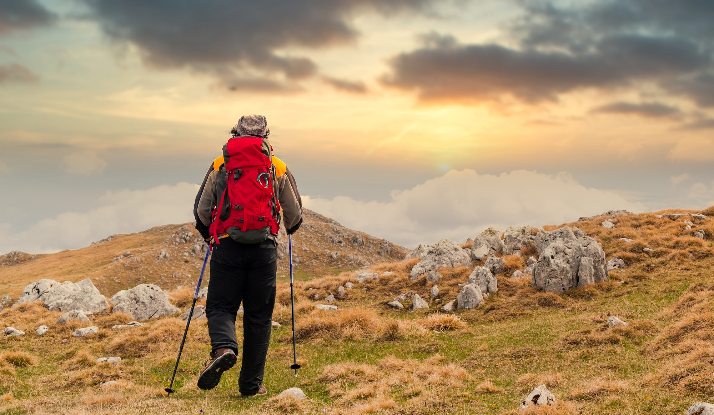
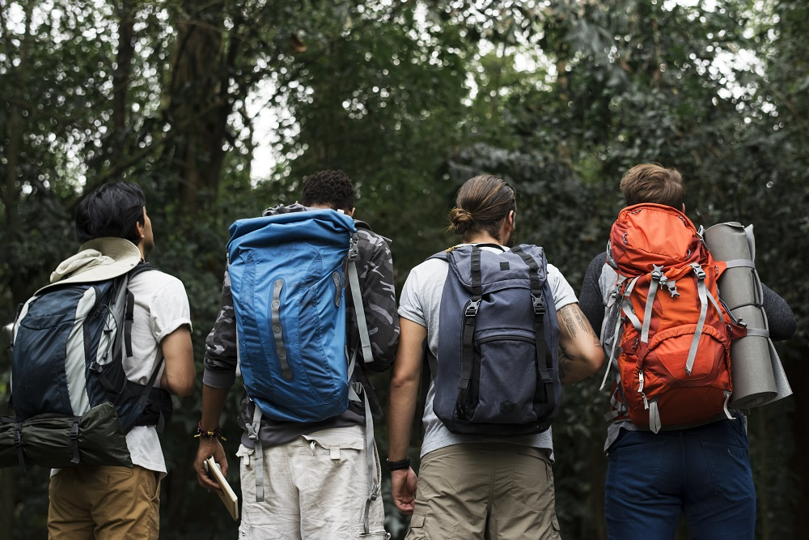
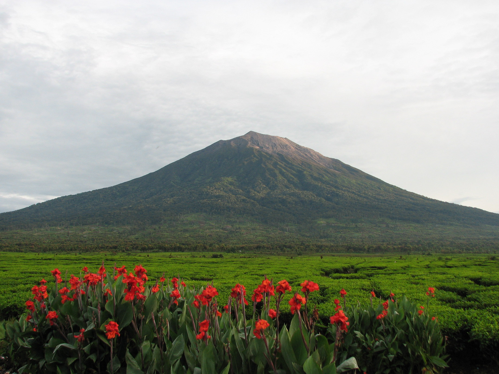
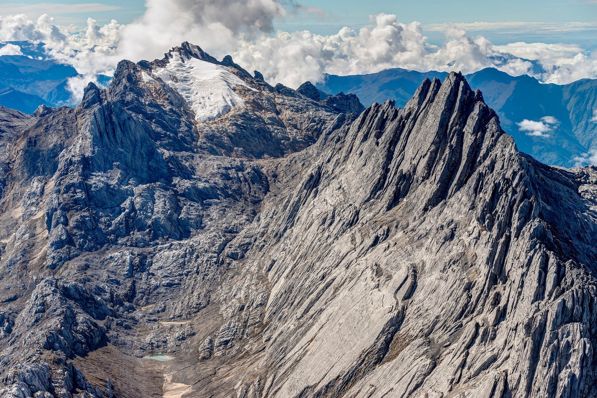
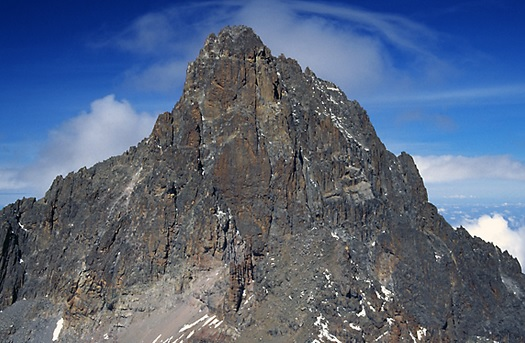
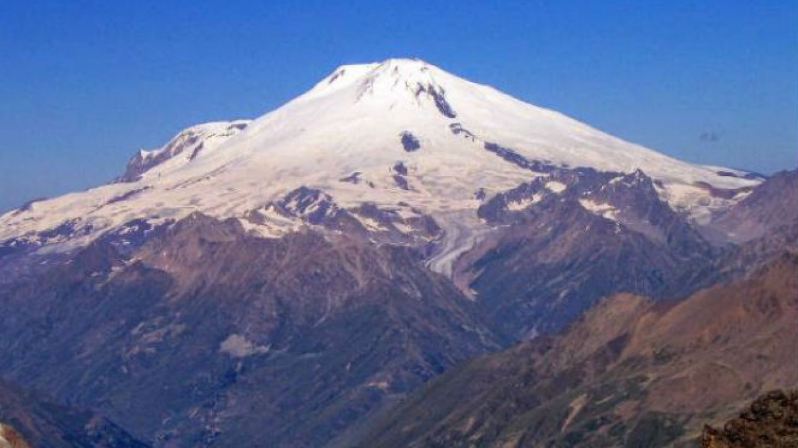

Sejarah Pendakian

Menurut catatan yang ada, di tahun 1700-an kegiatan menyusuri hutan hingga tebing untuk mencari sarang burung walet
gua di tebing-tebing Kalimantan Timur atau di Karangbolong-Jawa Tengah pernah dilakukan. Kegiatan tersebut bisa jadi
merupakan salah satu awal mula inspirasi kegiatan mendaki gunung di Indonesia.
Superfriends juga bisa menemukan tempat-tempat ziarah di gunung yang terkadang berada di posisi yang cukup tinggi dan
sulit. Tempat itu bisa menjadi bukti bahwa masyarakat pada zaman dahulu sudah beraktivitas menyusuri gunung untuk
berbagai kebutuhan.
Kemudian semakin berkembangnya waktu, kegiatan mendaki gunung dengan tujuan menikmati alam hingga ke puncak pun
muncul dan populer hingga saat ini. Tentunya, perlu dibarengi dengan pengetahuan yang ada, persiapan yang matang,
agar perjalanan tetap aman dan nyaman, serta dapat meminimalisir resiko yang mungkin terjadi.
Sejarah Mapala

Tahun 1964 tercatat sebagai tahun terbentuknya kelompok pecinta alam di Indonesia yang dibentuk oleh mahasiswa,
yaitu Mapala UI di Jakarta dan Wanadri di Bandung. Di tahun tersebut, pendakian berhasil dilakukan di Puncak
Carstensz dengan ketinggian 4884 mdpl oleh pendaki Jepang beserta 3 ABRI, yaitu Fred Athaboe, Sudarto, dan Suginin
yang tergabung dalam Ekspedisi Cendrawasih.
Setelah tahun tersebut, banyak kegiatan pendakian gunung yang dilakukan di gunung-gunung di Indonesia.
Hingga pada 1971, Mapala UI berhasil mencapai Puncak Jaya Wijaya yang dilakukan oleh anggota Mapala UI serta
beberapa orang di luar kelompok.
Meskipun sekarang kegiatan mendaki gunung dilakukan oleh banyak orang, tetapi pendakian gunung tetap merupakan
kegiatan yang tidak bisa dilakukan sembarangan. Banyak hal yang harus diperhatikan oleh setiap pendaki, terutama
tentang kesiapan fisik.
Terlebih, ketika gunung yang ditargetkan untuk didaki adalah gunung yang begitu tinggi dengan medan pendakian yang
tidak mudah untuk dilalui. Selain kesiapan fisik, peralatan mountaineering yang memadai juga wajib disiapkan.
Gunung Tertinggi di Indonesia
Indonesia mempunyai deretan gunung tertinggi yang tak kalah indah dengan gunung-gunung yang ada di negara lain.
Berikut ini adalah daftar 5 gunung tertinggi di Indonesia dengan pesona alamnya yang memikat, antara lain:
5. Gunung Rinjani – Nusa Tenggara Barat

Dibandingkan gunung Sanggar, tentu Rinjani lebih populer. Gunung Rinjani memiliki puncak dengan ketinggian
3.726 mdpl. Gunung yang sering dijuluki sebagai surga dunia oleh para pendaki ini terletak di Kabupaten
Lombok Utara, Nusa Tenggara Barat.
Salah satu spot paling indah di kawasan Gunung Rinjani dan mencuri perhatian wisatawan adalah danau kawah
berwarna biru. Saat mendaki gunung ini, para pendaki akan diminta untuk mematuhi berbagai peraturan yang
berlaku demi keselamatan diri dan lingkungan sekitar.
4. Gunung Kerinci – Jambi

Gunung tertinggi di Indonesia selanjutnya adalah Gunung Kerinci yang berada di ketinggian sekitar 3.805 mdpl.
Gunung ini terletak di kawasan Taman Nasional Kerinci Seblat, Jambi. Perlu kita ketahui, Kerinci adalah satu satu
gunung api paling aktif yang termasuk dalam jenis stratovolcano atau cincin api pasifik dengan kedalam kawah
puncak sekitar 600 meter.
Apabila tertarik untuk mendaki Gunung Kerinci ini, sebaiknya pilih jalur dari Desa Kersik Tuo. Jalur ini dianggap
sebagai rute paling mudah yang bisa ditempuh oleh para pendaki pemula sekalipun.
Ketika mendaki, kita akan disuguhi pemandangan berupa hamparan Perkebunan Teh Kayu Aro. Perkebunan ini merupakan
perkebunanteh tertua bekas zaman kolonial Belanda di Indonesia yang lokasinya berada di sekitar kaki Gunung Kerinci.
3. Gunung Puncak Mandala – Papua

Selanjutnya ada Gunung Puncak Mandala yang masih termasuk dalam jajaran Pegunungan Jayawijaya. Meski memiliki
ketinggian 4.670 mdpl yang artinya masih di bawah Gunung Ngga Pilimsit, tapi Puncak Mandala sering dijuluki
sebagai gunung tertinggi di Indonesia kedua setelah Puncak Jayawijaya.
Para pendaki lokal maupun asing sangat tertarik untuk menaklukkan puncak gunung ini karena jalur pendakiannya
yang dikenal cukup sulit. Tak heran, jika hanya pendaki berpengalaman, paham rute dan memiliki keahlian mumpuni
yang mampu mengeksplor Gunung Puncak Mandala.
2. Gunung Ngga Pilimsit – Papua

Gunung tertinggi di Indonesia berikutnya adalah Gunung Ngga Pilimsit yang berada di ketinggian 4.717 mdpl.
Gunung yang termasuk dalam jajaran Pegunungan Maoke di Papua ini namanya diambil dari nama Alexander Willem
Frederik Idenburg yang saat itu Ngga Plimsit disebut sebagai Mount Idenberg.
Menurut sejarah, Alexander Willem Frederik Idenburg merupakan seorang Gubernur Jenderal yang dulunya berkuasa
penuh atas Hindia-Belanda di tahun 1906 hingga 1916. Pendaki pertama yang berhasil menaklukan puncak Gunung Ngga
Pilimsit adalah Heinrich Harrer bersama Philip Temple di tahun 1962 silam.
Gunung Ngga Pilimsit mempunyai sebuah danau dengan air berwarna hijau tua di bagian dasar puncaknya. Danau ini
dikenal dengan nama Danau Idenberg. Uniknya, danau ini tidak memiliki aliran masuk dan keluar air sehingga saat
musim kemarau tiba, danau ini akan benar-benar kering. Saat kemarau, kita hanya bisa melihat tumbuhan ganggang
di bagian dasarnya.
1. Gunung Puncak Jayawijaya – Papua

Gunung tertinggi di Indonesia adalah Puncak Jayawijaya yang memiliki ketinggian sekitar 4.884 mdpl. Gunung ini
merupakan salah satu dari 10 gunung tertinggi di nusantara dan berhasil masuk dalam Situs Warisan Dunia UNESCO.
Gunung Puncak Jayawijaya terletak di Kabupaten Puncak Jaya Papua yang sangat populer di kalangan pendaki lokal
maupun mancanegara. Sebab, puncak gunung ini punya keindahan yang begitu luar biasa. Bahkan saking populernya,
gunung yang mempunyai puncak salju abadi ini termasuk salah satu gunung dengan biaya pendakian paling mahal.
Bagaimana tidak, kita harus merogoh kocek sekitar Rp 50 juta untuk satu kali tur sampai tiba di puncaknya.
Sementara untuk wisatawan mancanegara, nominalnya tentu jauh lebih mahal daripada besaran tarif wisatawan lokal.